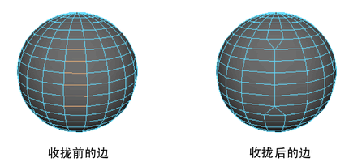

合并选择的边
您可以使用
“编辑网格 > 收拢”(Edit Mesh > Collapse)
逐个组件收拢边。
提示：
此命令还适用于面，但会产生不可预料的结果。如果要收拢并合并所选的面，请尝试使用
“编辑网格 > 合并到中心”(Edit Mesh > Merge to Center)
。
合并选择的边
选择要在逐个组件的基础上合并的边。
选择
编辑网格> 收拢(Edit Mesh > Collapse)
。
每条边均会收拢，其顶点则将合并。

父主题：
合并多边形